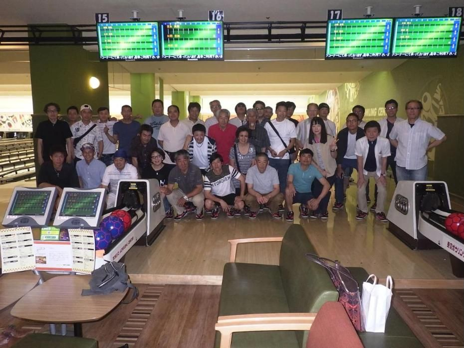

SALES
営業職｜現場と取引先をつなぐ
取引先からの工事の相談を受け、現地の状況を確認し、見積や材料・外注の手配、現場との連絡などを行います。相手の希望を聞くだけではなく、現場が無理なく作業を進められるように情報を整えることも重要な仕事です。
先輩への同行から仕事を覚え、徐々に担当できる案件を広げていきます。一方、工事の状況によっては、休日や夜間に緊急の連絡が入る場合があります。
採用情報で詳しく見るWORK ENVIRONMENT ／ 労働環境
道路や水道を支える仕事は、現場の状況や季節によって大変さも変わります。久留米興業が考える働き方、営業職と現場職の違い、仕事を続けるための取り組みをご紹介します。
OUR APPROACH 働くことへの考え方
久留米興業の川島代表は、若い頃に現場の仕事を経験し、休みの少なさや長時間の働き方に悩んだ時期がありました。代表になってからは、以前のやり方をそのまま続けるのではなく、労働時間の管理や人員体制の見直しに取り組んできました。
現場の仕事は、天候や工程、緊急時の対応によって予定どおりに進まないこともあります。それでも、一人ひとりが無理を重ねる働き方を当たり前にしない。仕事に必要な集中と、それ以外の生活の両方を大切にしたいと考えています。
「変えられない現場の条件」と
「変えていける会社の仕組み」。
HOW WE WORK 職種ごとの働き方
久留米興業の工事は、取引先と現場の両方が動くことで進んでいきます。仕事内容は違っても、互いの状況を知り、協力して進めることが欠かせません。
取引先からの工事の相談を受け、現地の状況を確認し、見積や材料・外注の手配、現場との連絡などを行います。相手の希望を聞くだけではなく、現場が無理なく作業を進められるように情報を整えることも重要な仕事です。
先輩への同行から仕事を覚え、徐々に担当できる案件を広げていきます。一方、工事の状況によっては、休日や夜間に緊急の連絡が入る場合があります。
採用情報で詳しく見る
道路舗装や水道関連工事などの現場で、仲間と工程を確認しながら作業を進めます。未経験であれば、まずは現場の流れ、道具、機械の扱いを知ることから。一つずつできる仕事を増やし、周囲の作業を見ながら次の工程を考える力を身につけます。
現場の朝が早いことや、夏場は屋外で暑さと向き合うことも、この仕事の現実です。そのため、安全対策や体調管理が重要になります。
採用情報で詳しく見る| 項目 | 営業職 | 現場職 |
|---|---|---|
| 仕事内容 | 工事の相談、現地確認、見積、材料・外注の手配、現場との連絡 | 道路舗装や水道関連工事などの現場作業 |
| 主に関わる人 | 取引先、現場の社員、協力会社 | 班の仲間、現場の責任者 |
| 働く場所 | 事務所、取引先、工事現場 | 工事現場 |
| 身につくこと | 現場と取引先をつなぐ調整、工事の専門知識 | 道具・機械の扱い、次の工程を考える力 |
| 大変な部分 | 工事の状況により、休日や夜間に緊急の連絡が入る場合がある | 朝が早い。夏場は屋外で暑さと向き合う |
| キャリア | 先輩同行から始め、案件を任される人へ | できる作業を増やし、資格や現場の役割を広げる |
| 勤務時間・休日 | 8:00〜17:00、年間休日127日以上（現行の営業求人） | 【要確認】現場職の勤務時間・休日・早朝集合の実態 |
A DAY AT WORK 1日の流れ
現場や担当案件によって予定は異なります。ここでは営業と現場、それぞれがどのような場面で仕事を進めるかを紹介します。
【要確認】具体的な時刻（集合・休憩・帰社・残業）は、各職種の社員に実態を確認してから追記します。確認できるまでは時刻なしで掲載します。
MANGA マンガで見る
作画前に、教育担当・新人社員への取材と、登場人物・内容の承認が必要です。画像には代替テキストと会話のテキスト版を用意します。
OUR WORKPLACE 働く場所・環境
事務所、現場、移動、そして生活の場。働く場所を写真で知ると、一日のイメージが少し具体的になります。

地方からの入社を検討する方の生活を支える設備です。
【要確認】空室・対象者・所在地・料金・設備の状態・勤務地までの移動・入寮条件。2021年時点の公式案内（寮費3万円＋光熱費5千円）は現在の費用として使いません。
BENEFITS 福利厚生
福利厚生は、制度の名称だけでなく、誰が・どのような条件で利用できるかも大切です。働き方と生活の両面に関わる取り組みを、わかりやすくご案内します。
昇給、賞与、各種手当、退職金制度。
営業職の現行求人は昇給年1回・賞与年2回。現場職への適用範囲を確認。
資格取得支援。
費用負担・対象資格・受験回数・取得後の手当を確認。
社会保険、健康診断、熱中症対策など。
飲料支給（公式サイトの先輩の声に「1日2回」）の現在の運用を確認。
個室寮など。
金額と入寮条件は確認後に記載。
社員旅行、忘年会、暑気払い、ゴルフクラブなど。
現在の開催状況と、参加が任意かを確認。

OUR EFFORTS 自社の取り組み
仕事の進め方を変えるのは簡単ではありません。それでも、時代や現場の状況に合わせて、できるところから見直してきました。
01
代表の経験をきっかけに、残業時間の管理や労務ルールの見直しに取り組んできました。業務の状況によって残業が必要な時もありますが、長時間働くこと自体を良いこととはせず、仕事の進め方を考えています。

02
仕事量を単に減らすのではなく、必要な人員を確保して負担を分けるという考えで、現場の体制を見直してきました。

03
屋外での作業に必要な熱中症対策や安全への配慮に取り組み、地域との関係を大切にして事業を続けています。
実際に働く人の声や、具体的な仕事・募集条件もあわせてご覧ください。